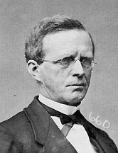

|

|

|
|
|
Lyman Trumbull was born in Colchester, Connecticut, the son
of the attorney Benjamin Trumbull and his wife, Elizabeth
Mather. Although descended from illustrious Puritan
ancestors, the Trumbulls were not wealthy, and their son,
after attending Bacon Academy, taught school. At age
nineteen he accepted the post of principal of Greenville
Academy in Georgia, read law, and in 1837 was admitted to
the bar. Moving to Belleville, Illinois, he started a law
practice. In 1840 he was elected a Democratic member of the
legislature and the next year appointed Secretary of State.
Removed from office in 1843, he made a name for himself by
waging legal struggles against the remnant of slavery in
Illinois.
After marrying Julia Jayne of Springfield, in 1848
Trumbull ran unsuccessfully for Congress. Two years later,
having moved to Alton, he was elected to the Illinois
Supreme Court, on which he served until 1853. In 1854 he
succeeded in his bid for Congress, but before he could take
his seat, he became the anti-Nebraska choice for U.S.
Senator and, with the help of Abraham Lincoln, who had been
a rival candidate, was elected in 1855. He joined the
emerging Republican party and was returned to his seat in
1861.
During the Civil War, Trumbull, who had been a moderate,
gradually became more and more radical. In collaboration
with Zachariah Chandler and Benjamin F. Wade, he put
pressure on Lincoln for a more determined prosecution of the
war and, as chairman of the Senate Judiciary Committee,
prepared the Habeas Corpus and Second Confiscation Acts.
After moving to Chicago, in 1864 he supplied the wording of
the Thirteenth Amendment, which he successfully piloted
through the Senate.
Trumbull's Reconstruction career was marked by a
generally moderate course. After first opposing the
admission of Senators from Arkansas, he nevertheless favored
Lincoln's scheme of restoration in Louisiana and
unsuccessfully supported the seating of that state's
delegation. He concurred with Andrew Johnson in the belief
that suffrage was a state concern and therefore at first did
not endorse votes for freedmen. Yet he was the author of the
Freedmen's Bureau Bill of 1866, which would have confirmed
land titles for the blacks, as well as of the Civil Rights
Act, which conferred citizenship upon them and guaranteed
their civil rights.
Johnson's veto of these two measures brought about a
complete break between the President and Trumbull, who had
been led to believe that Johnson would sign them.
Accordingly the Senator, who was reelected in 1867, wrote
the preamble to the bill readmitting Tennessee, which
asserted the right of Congress to reconstruct a state, and
later favored the Reconstruction Acts.Nevertheless, Trumbull
did not rejoin his wartime radical associates. Taking an
unfavorable view of the impeachment of Johnson, he
considered the trial a judicial proceeding, carefully
weighed the evidence, and found it wanting. Consequently, he
became one of the seven "recusant" Republicans who voted for
the President's acquittal.
Although Trumbull supported Ulysses S. Grant for the
presidency, he soon drifted into the Liberal Republican
camp. He favored civil service reform, authored the 1871
amendment to an appropriations bill setting up a civil
service commission, and in the next year was an active
contender for the Liberal Republican presidential
nomination. Defeated for reelection in 1873, he retired to
Chicago to resume his law practice. In 1876 he rejoined the
Democratic party, argued its case before the 1877 Electoral
Commission and in 1880 was its unsuccessful candidate for
Governor. In 1886 he appealed to the Governor of Illinois
for a commutation of the Hay Market anarchists' death
sentences and, sympathizing with the Populists in the 1890s,
appeared for Eugene V. Debs in his habeas corpus case.
Trumbull died in Chicago in 1906.
Source: Christopher Bates for the History 139A website
|